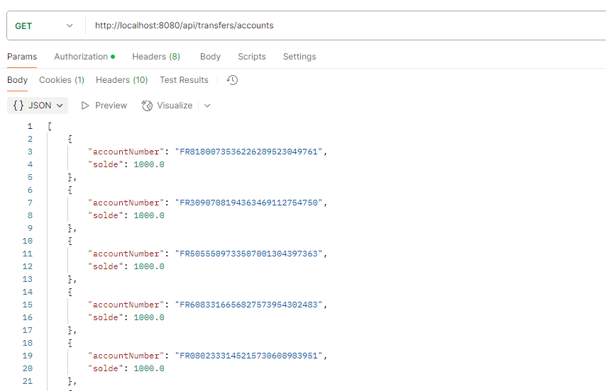
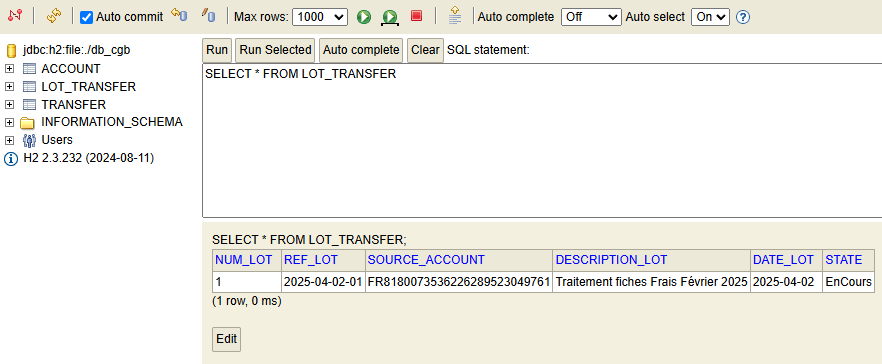

Projet Formation • API REST Backend
CGB — API REST Bancaire
Architecture Microservices & Sécurité Spring Boot


Description du Projet
API bancaire développée en Java avec Spring Boot, simulant un serveur bancaire pour le traitement et la validation des remboursements de frais. Cette solution assure l'authentification des requêtes, le traitement des transactions financières et le suivi comptable.
Fonctionnalités Clés & Sécurité
- — Authentification sécurisée des transactions bancaires avec Spring Security et JWT.
- — Validation et traitement automatisé des demandes de virements et remboursements.
- — Architecture RESTful standardisée pour une intégration client transparente.
- — Gestion des habilitations et des rôles d'accès aux opérations sensibles.
- — Journalisation des transactions et conformité des flux financiers.